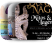

Low Yat Plaza

7, Jalan Bintang, Bukit Bintang, 55100 Kuala Lumpur, Wilayah Persekutuan Kuala Lumpur, Malaysia
About this Product & Services
Plaza Low Yat is the oldest shopping centre specializing in electronics and IT products in Kuala Lumpur, Malaysia. In 2009, Plaza Low Yat was named “Malaysia’s Largest IT Lifestyle Centre”
See more...

National Museum
of Malaysia
Jabatan Muzium Malaysia, Jln Damansara, Perdana Botanical Gardens, 50566 Kuala Lumpur, Federal Territory of Kuala Lumpur
About this Product & Services
The National Museum is a museum located on Jalan Damansara in Kuala Lumpur, Malaysia. The museum is situated in close proximity to the Perdana Lake Gardens and it provides
See more...
National Library
of Malaysia
232, Jln Tun Razak, Titiwangsa, 50572 Kuala Lumpur, Wilayah Persekutuan Kuala Lumpur
About this Product & Services
The National Library of Malaysia is a library established under the National Library Act 1972 in Kuala Lumpur, Malaysia. The National Library is responsible for providing a collection
See more...
Kuala Lumpur
Craft Complex
Kompleks Kraf, 5, Jalan Conlay, Kuala Lumpur, 50450 Kuala Lumpur, Wilayah Persekutuan Kuala Lumpur
About this Product & Services
The Kuala Lumpur Craft Complex is an iconic art tourism destination located in the heart of the city. This one-stop craft centre offers a myriad of tourism products such as arts and crafts for local and foreign visitors. See more...

Pasar Seni
Central Market, Kuala Lumpur City Centre, 50050 Kuala Lumpur, Federal Territory of Kuala Lumpur
About this Product & Services
Central Market Kuala Lumpur is a centre for Malaysian culture, art and craft located in the heart of the city. As a building with significant historical value Central Market Kuala Lumpur has come a long way... See more...
Best Local Food
Tour by Night
Lot No. LTC/T3(A), Bintang Terrace, Lot10 Shopping Centre, 50, Bukit Bintang St, 55100 Wilayah Persekutuan, Federal Territory of Kuala Lumpur
About this Product & Services
No visit to Kuala Lumpur would be complete without sampling its three delicious culinary traditions: Indian, Chinese, and Malay. This great-value private tour is just like having your own local friend... See more...
GO KL City Bus
2, Jalan Stesen Sentral Block D, Platinum Sentral, Kuala Lumpur Sentral, Kuala Lumpur 50470, Malaysia
About this Product & Services
Go-KL City Bus is a free bus service, which is operated by the Land Public Transport Commission (SPAD). These single-decker busses are easily identifiable from its colour (pink) and is a comfortable and convenient option for travellers. See more...